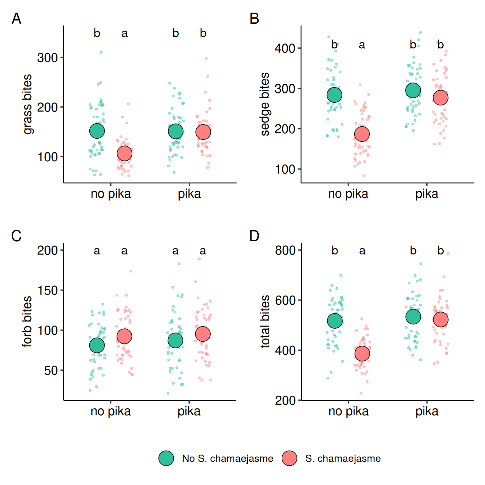

Pika-Yak Interaction: Foraging Efficiency
1 Bite Steps
The following figure (Figure 1) shows the relationship between yak bite/step ratios per plant across he pika and poison plant treatments. We see decreased bite/step ratios for grasses and sedges within the no pika and poison plant treatment plots. Whereas all other treatment levels had a consistent bite/step ratio. Forbs is an exception where there is no difference except with increase forb bite/step ratio in the pika x poison plant treatment level.
1.1 Grass Bite Steps
The model revealed that the presence of S. chamaejasme significantly reduced yak grass feeding efficiency (bite/step ratio) (Table 1), but this negative effect was mitigated when pikas were present, as shown by a significant positive interaction (Table 1). Pika presence alone did not influence feeding efficiency; however, in combination with S. chamaejasme, it substantially improved it (Table 2). These results suggest that pikas may facilitate yak foraging by offsetting the detrimental effects of poisonous plants.
1.2 Sedge Bite Steps
The presence of S. chamaejasme significantly reduced yak feeding efficiency on sedges, as shown by a strong negative main effect in the model summary (Table 3). Although pika presence alone had no effect, the significant positive interaction indicates that pikas mitigated the negative impact of the poisonous plant. Specifically, sedge bite/step ratios were much lower when S. chamaejasme was present without pikas, but this reduction was substantially less when pikas were present (see pairwise contrasts in Table 4). These findings suggest that pikas facilitate yak foraging on sedges by reducing the negative effects of S. chamaejasme.
1.3 Forbs Bite Steps
For forbs, neither pika presence nor S. chamaejasme alone significantly affected yak feeding efficiency, as both main effects were non-significant (see Table 5). However, there was a marginally non-significant interaction (p = 0.067), suggesting a possible moderating effect of pikas on the impact of the poisonous plant. In the pairwise contrasts, the bite/step ratio was significantly lower when S. chamaejasme was present and pikas were absent compared to when both were present (see Table 6). This indicates a weaker but still detectable facilitative effect of pikas on yak forb consumption in the presence of S. chamaejasme.
2 Plant bites
The following figure (Figure 1) shows the relationship between yak bite/step ratios per plant across the pika and poison plant treatments. We observe decreased bite/step ratios for grasses and sedges in the no-pika and poison plant treatment plots, while all other treatment levels exhibited consistent bite/step ratios. For forbs, there was no difference except for an increased bite/step ratio in the pika × poison plant treatment level.

2.1 Grass Plant Bites
Yak grazing on grasses was significantly reduced by the presence of the poisonous plant S. chamaejasme, with a large negative estimate (-45.3) indicating fewer bites in treated plots. The pika treatment alone had no significant effect on grass bites. However, the interaction between pika presence and S. chamaejasme treatment was positive and significant (+43.9), suggesting that pika presence mitigates the negative effect of the poisonous plant on grass bites. Contrasts confirm that plots with S. chamaejasme had substantially lower grazing, except when pikas were present, which restored grazing levels.
2.2 Forb Plant Bites
Yak bites on forbs were generally low and showed no significant differences across pika or poisonous plant treatments. The S. chamaejasme treatment showed a marginally positive effect on forb bites, but this was not statistically significant (p ~ 0.058). The interaction between pika and S. chamaejasme was also non-significant. Overall, yak grazing on forbs appears unaffected by either treatment or their interaction.
2.3 Sedge Plant Bites
Grazing on sedges was significantly reduced by S. chamaejasme treatment (estimate = -0.42), indicating fewer yak bites in plots with the poisonous plant. Pika presence alone had no significant effect, but the pika × S. chamaejasme interaction was strongly positive (+0.36), showing that pika presence offsets the reduction caused by the poisonous plant. Contrasts reveal that sedge grazing decreases with S. chamaejasme unless pikas are present, which helps maintain grazing levels.
2.4 Total Plant Bites
Yak grazing overall was significantly reduced by S. chamaejasme treatment, with 131 fewer bites on average compared to control plots without the poisonous plant. Pika presence alone did not significantly influence total bites. However, the strong positive interaction term (+119.5) indicates that pika presence substantially offsets the negative effect of S. chamaejasme, restoring grazing rates close to control levels. Contrasts confirm that while S. chamaejasme sharply reduces total bites, this effect is largely absent when pikas are present.
3 total steps and weight gain
3.1 Total Step Model Summary
Yak movement (total steps) was significantly higher in S. chamaejasme plots, with an average increase of 113 steps compared to control plots without the poisonous plant (Table 14). Pika presence alone did not significantly affect step counts. However, the strong negative interaction term (−136.1, Table 14) indicates that when pikas were present, the S. chamaejasme-induced increase in movement was eliminated. Contrasts show that while S. chamaejasme alone led to more steps, this effect was absent or reversed in the presence of pikas, suggesting that pikas dampen the plant’s impact on yak movement patterns (Table 15).
3.2 Weight Gain Summary
The poisonous plant S. chamaejasme substantially reduced yak weight gain, with a mean loss of 0.108 kg/day compared to control plots without the plant, while pika presence alone had no significant effect on weight gain (Table 16). However, the strong positive interaction term (+0.132 kg/day) indicates that pika presence largely neutralizes the negative effect of S. chamaejasme, resulting in weight gain similar to control conditions. Contrasts show that while S. chamaejasme sharply reduces weight gain in the absence of pikas, this reduction disappears when pikas are present, suggesting a facilitative role of pikas in mitigating plant-induced losses (Table 17).
4 tables
| effect | term | estimate | std.error | statistic | p.value |
|---|---|---|---|---|---|
| fixed | (Intercept) | -1.012 | 0.077 | -13.157 | 0.000 |
| fixed | pika | 0.016 | 0.088 | 0.187 | 0.852 |
| fixed | poison plant | -0.601 | 0.096 | -6.275 | 0.000 |
| fixed | pika : poison treamtent | 0.666 | 0.129 | 5.146 | 0.000 |
| ran_pars | block | 0.031 | NA | NA | NA |
| ran_pars | year | 0.060 | NA | NA | NA |
| ran_pars | month | 0.000 | NA | NA | NA |
| contrast | odds.ratio | SE | df | null | z.ratio | p.value |
|---|---|---|---|---|---|---|
| no pika No S. chamaejasme / pika No S. chamaejasme | 0.984 | 0.086 | Inf | 1 | -0.187 | 0.998 |
| no pika No S. chamaejasme / no pika S. chamaejasme | 1.824 | 0.175 | Inf | 1 | 6.275 | 0.000 |
| no pika No S. chamaejasme / pika S. chamaejasme | 0.922 | 0.080 | Inf | 1 | -0.936 | 0.786 |
| pika No S. chamaejasme / no pika S. chamaejasme | 1.854 | 0.177 | Inf | 1 | 6.460 | 0.000 |
| pika No S. chamaejasme / pika S. chamaejasme | 0.937 | 0.082 | Inf | 1 | -0.748 | 0.877 |
| no pika S. chamaejasme / pika S. chamaejasme | 0.505 | 0.048 | Inf | 1 | -7.178 | 0.000 |
| effect | term | estimate | std.error | statistic | p.value |
|---|---|---|---|---|---|
| fixed | (Intercept) | 0.040 | 0.140 | 0.284 | 0.776 |
| fixed | pika | 0.080 | 0.120 | 0.668 | 0.504 |
| fixed | poison plant | -0.949 | 0.125 | -7.612 | 0.000 |
| fixed | pika : poison treamtent | 1.006 | 0.172 | 5.833 | 0.000 |
| ran_pars | block | 0.174 | NA | NA | NA |
| ran_pars | year | 0.083 | NA | NA | NA |
| ran_pars | month | 0.065 | NA | NA | NA |
| contrast | odds.ratio | SE | df | null | z.ratio | p.value |
|---|---|---|---|---|---|---|
| no pika No S. chamaejasme / pika No S. chamaejasme | 0.923 | 0.110 | Inf | 1 | -0.668 | 0.909 |
| no pika No S. chamaejasme / no pika S. chamaejasme | 2.583 | 0.322 | Inf | 1 | 7.612 | 0.000 |
| no pika No S. chamaejasme / pika S. chamaejasme | 0.872 | 0.104 | Inf | 1 | -1.154 | 0.656 |
| pika No S. chamaejasme / no pika S. chamaejasme | 2.798 | 0.350 | Inf | 1 | 8.218 | 0.000 |
| pika No S. chamaejasme / pika S. chamaejasme | 0.944 | 0.113 | Inf | 1 | -0.479 | 0.964 |
| no pika S. chamaejasme / pika S. chamaejasme | 0.338 | 0.042 | Inf | 1 | -8.740 | 0.000 |
| effect | term | estimate | std.error | statistic | p.value |
|---|---|---|---|---|---|
| fixed | (Intercept) | -1.756 | 0.094 | -18.745 | 0.000 |
| fixed | pika | 0.059 | 0.092 | 0.642 | 0.521 |
| fixed | poison plant | -0.045 | 0.093 | -0.486 | 0.627 |
| fixed | pika : poison treamtent | 0.235 | 0.128 | 1.835 | 0.067 |
| ran_pars | block | 0.108 | NA | NA | NA |
| ran_pars | year | 0.000 | NA | NA | NA |
| ran_pars | month | 0.068 | NA | NA | NA |
| contrast | odds.ratio | SE | df | null | z.ratio | p.value |
|---|---|---|---|---|---|---|
| no pika No S. chamaejasme / pika No S. chamaejasme | 0.943 | 0.086 | Inf | 1 | -0.642 | 0.918 |
| no pika No S. chamaejasme / no pika S. chamaejasme | 1.046 | 0.097 | Inf | 1 | 0.486 | 0.962 |
| no pika No S. chamaejasme / pika S. chamaejasme | 0.780 | 0.069 | Inf | 1 | -2.800 | 0.026 |
| pika No S. chamaejasme / no pika S. chamaejasme | 1.110 | 0.102 | Inf | 1 | 1.127 | 0.673 |
| pika No S. chamaejasme / pika S. chamaejasme | 0.827 | 0.073 | Inf | 1 | -2.151 | 0.137 |
| no pika S. chamaejasme / pika S. chamaejasme | 0.745 | 0.067 | Inf | 1 | -3.280 | 0.006 |
| effect | term | estimate | std.error | statistic | p.value |
|---|---|---|---|---|---|
| fixed | (Intercept) | 151.716 | 7.492 | 20.250 | 0.000 |
| fixed | pika | -0.795 | 8.606 | -0.092 | 0.926 |
| fixed | poison plant | -45.338 | 8.606 | -5.268 | 0.000 |
| fixed | pika : poison treamtent | 43.945 | 12.171 | 3.611 | 0.000 |
| ran_pars | block | 4.781 | NA | NA | NA |
| ran_pars | year | 5.174 | NA | NA | NA |
| ran_pars | month | 0.003 | NA | NA | NA |
| ran_pars | Residual | 42.160 | NA | NA | NA |
| contrast | estimate | SE | df | t.ratio | p.value |
|---|---|---|---|---|---|
| no pika No S. chamaejasme - pika No S. chamaejasme | 0.795 | 8.606 | 184 | 0.092 | 1.000 |
| no pika No S. chamaejasme - no pika S. chamaejasme | 45.338 | 8.606 | 184 | 5.268 | 0.000 |
| no pika No S. chamaejasme - pika S. chamaejasme | 2.188 | 8.606 | 184 | 0.254 | 0.994 |
| pika No S. chamaejasme - no pika S. chamaejasme | 44.542 | 8.606 | 184 | 5.176 | 0.000 |
| pika No S. chamaejasme - pika S. chamaejasme | 1.392 | 8.606 | 184 | 0.162 | 0.998 |
| no pika S. chamaejasme - pika S. chamaejasme | -43.150 | 8.606 | 184 | -5.014 | 0.000 |
| effect | term | estimate | std.error | statistic | p.value |
|---|---|---|---|---|---|
| fixed | (Intercept) | 4.394 | 0.067 | 65.117 | 0.000 |
| fixed | pika | 0.074 | 0.070 | 1.060 | 0.289 |
| fixed | poison plant | 0.131 | 0.069 | 1.897 | 0.058 |
| fixed | pika : poison treamtent | -0.043 | 0.096 | -0.443 | 0.658 |
| ran_pars | block | 0.064 | NA | NA | NA |
| ran_pars | year | 0.000 | NA | NA | NA |
| ran_pars | month | 0.055 | NA | NA | NA |
| effect | term | estimate | std.error | statistic | p.value |
|---|---|---|---|---|---|
| fixed | (Intercept) | 5.648 | 0.041 | 138.781 | 0.000 |
| fixed | pika | 0.039 | 0.043 | 0.918 | 0.359 |
| fixed | poison plant | -0.418 | 0.048 | -8.706 | 0.000 |
| fixed | pika : poison treamtent | 0.355 | 0.064 | 5.506 | 0.000 |
| ran_pars | block | 0.038 | NA | NA | NA |
| ran_pars | year | 0.016 | NA | NA | NA |
| ran_pars | month | 0.026 | NA | NA | NA |
| contrast | ratio | SE | df | null | z.ratio | p.value |
|---|---|---|---|---|---|---|
| no pika No S. chamaejasme / pika No S. chamaejasme | 0.962 | 0.041 | Inf | 1 | -0.918 | 0.795 |
| no pika No S. chamaejasme / no pika S. chamaejasme | 1.519 | 0.073 | Inf | 1 | 8.706 | 0.000 |
| no pika No S. chamaejasme / pika S. chamaejasme | 1.025 | 0.044 | Inf | 1 | 0.559 | 0.944 |
| pika No S. chamaejasme / no pika S. chamaejasme | 1.580 | 0.075 | Inf | 1 | 9.584 | 0.000 |
| pika No S. chamaejasme / pika S. chamaejasme | 1.066 | 0.046 | Inf | 1 | 1.476 | 0.452 |
| no pika S. chamaejasme / pika S. chamaejasme | 0.674 | 0.033 | Inf | 1 | -8.168 | 0.000 |
| effect | term | estimate | std.error | statistic | p.value |
|---|---|---|---|---|---|
| fixed | (Intercept) | 516.960 | 13.697 | 37.743 | 0.000 |
| fixed | pika | 16.732 | 16.580 | 1.009 | 0.313 |
| fixed | poison plant | -130.845 | 16.580 | -7.892 | 0.000 |
| fixed | pika : poison treamtent | 119.478 | 23.447 | 5.096 | 0.000 |
| ran_pars | block | 8.619 | NA | NA | NA |
| ran_pars | year | 7.948 | NA | NA | NA |
| ran_pars | month | 0.008 | NA | NA | NA |
| ran_pars | Residual | 81.224 | NA | NA | NA |
| contrast | estimate | SE | df | t.ratio | p.value |
|---|---|---|---|---|---|
| no pika No S. chamaejasme - pika No S. chamaejasme | -16.732 | 16.58 | 184 | -1.009 | 0.744 |
| no pika No S. chamaejasme - no pika S. chamaejasme | 130.845 | 16.58 | 184 | 7.892 | 0.000 |
| no pika No S. chamaejasme - pika S. chamaejasme | -5.365 | 16.58 | 184 | -0.324 | 0.988 |
| pika No S. chamaejasme - no pika S. chamaejasme | 147.577 | 16.58 | 184 | 8.901 | 0.000 |
| pika No S. chamaejasme - pika S. chamaejasme | 11.367 | 16.58 | 184 | 0.686 | 0.902 |
| no pika S. chamaejasme - pika S. chamaejasme | -136.210 | 16.58 | 184 | -8.215 | 0.000 |
| effect | term | estimate | std.error | statistic | p.value |
|---|---|---|---|---|---|
| fixed | (Intercept) | 583.542 | 15.190 | 38.415 | 0.000 |
| fixed | pika | -8.229 | 20.981 | -0.392 | 0.695 |
| fixed | poison plant | 113.062 | 20.981 | 5.389 | 0.000 |
| fixed | pika : poison treamtent | -136.146 | 29.671 | -4.588 | 0.000 |
| ran_pars | block | 6.527 | NA | NA | NA |
| ran_pars | year | 0.000 | NA | NA | NA |
| ran_pars | month | 0.000 | NA | NA | NA |
| ran_pars | Residual | 102.785 | NA | NA | NA |
| contrast | estimate | SE | df | t.ratio | p.value |
|---|---|---|---|---|---|
| no pika No S. chamaejasme - pika No S. chamaejasme | 8.229 | 20.981 | 184 | 0.392 | 0.979 |
| no pika No S. chamaejasme - no pika S. chamaejasme | -113.062 | 20.981 | 184 | -5.389 | 0.000 |
| no pika No S. chamaejasme - pika S. chamaejasme | 31.312 | 20.981 | 184 | 1.492 | 0.444 |
| pika No S. chamaejasme - no pika S. chamaejasme | -121.292 | 20.981 | 184 | -5.781 | 0.000 |
| pika No S. chamaejasme - pika S. chamaejasme | 23.083 | 20.981 | 184 | 1.100 | 0.690 |
| no pika S. chamaejasme - pika S. chamaejasme | 144.375 | 20.981 | 184 | 6.881 | 0.000 |
| effect | term | estimate | std.error | statistic | p.value |
|---|---|---|---|---|---|
| fixed | (Intercept) | 0.322 | 0.030 | 10.796 | 0.000 |
| fixed | pika | 0.010 | 0.014 | 0.740 | 0.459 |
| fixed | poison plant | -0.108 | 0.014 | -7.697 | 0.000 |
| fixed | pika : poison treamtent | 0.132 | 0.020 | 6.629 | 0.000 |
| ran_pars | block | 0.008 | NA | NA | NA |
| ran_pars | year | 0.014 | NA | NA | NA |
| ran_pars | month | 0.045 | NA | NA | NA |
| ran_pars | Residual | 0.069 | NA | NA | NA |
| contrast | estimate | SE | df | t.ratio | p.value |
|---|---|---|---|---|---|
| no pika No S. chamaejasme - pika No S. chamaejasme | -0.010 | 0.014 | 184 | -0.740 | 0.881 |
| no pika No S. chamaejasme - no pika S. chamaejasme | 0.108 | 0.014 | 184 | 7.697 | 0.000 |
| no pika No S. chamaejasme - pika S. chamaejasme | -0.034 | 0.014 | 184 | -2.418 | 0.077 |
| pika No S. chamaejasme - no pika S. chamaejasme | 0.119 | 0.014 | 184 | 8.438 | 0.000 |
| pika No S. chamaejasme - pika S. chamaejasme | -0.024 | 0.014 | 184 | -1.678 | 0.338 |
| no pika S. chamaejasme - pika S. chamaejasme | -0.142 | 0.014 | 184 | -10.115 | 0.000 |